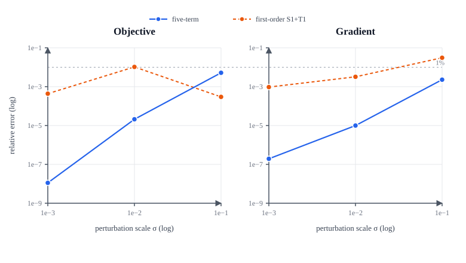

LLM RL 的稳定性，很大程度上取决于 sampler 和 trainer 有多像。理想情况下它们是同一个策略；现实中，一个在 vLLM 里生成，一个在 Megatron 里训练，中间隔着参数 lag、精度、kernel、量化、MoE routing。我们把这两类差异分别叫作 staleness 和 TIM 。它们经常被混在一起讨论，但其实是两个不同空间里的扰动。
Staleness 是参数空间的扰动，TIM 是 logit 空间的扰动；联合起来，它们仍然是一个 logit 扰动。这个观察让"两类 Mismatch"变成一个可分离的分解问题。
既然它们可以写成同一个 logit 扰动，就可以从三个坐标来分析它：
source ：staleness（S）还是 TIM（T）？mechanism ：drift（均值平移）还是 covariance（与 reward 的耦合）？resolution ：一阶、二阶，还是精确？
后面的章节就是按这三个坐标展开的：§4 是一阶的单源切片，§5 是精确的联合分解（纯 staleness + 纯 TIM + interaction），§6 是二阶的五项切片，§7 把现有方法投影到这些项上。单源分析建立坐标轴，精确联合提供 ground truth，二阶展开给出可操作的 budget。
主要结论
两类 Mismatch 可以写成同一个 logit 扰动 ：staleness 分量 δ z S \delta z_S δ z S δ z T \delta z_T δ z T Staleness和TIM的联合作用可以写成精确的 2D 分解 ：objective 和 gradient 的 bias 都可以写成"纯 staleness + 纯 TIM + interaction"，interaction 是协方差场在 ( λ S , λ T ) (\lambda_S,\lambda_T) ( λ S , λ T ) 二阶展开有五项 ：两个一阶项、两个二阶自项、一个交叉项 S T ST S T S T ST S T SC 只消 drift ，不消 covariance；IS 系是唯一直接压 covariance 的 ；source-reduction 是唯一能区分两源的 。一句话 ：现有方法的分工是"SC 管 drift，IS/mask 管 covariance，FP16/router replay 管源"；S T ST S T
文中的 推导 折叠块是补充证明，第一遍阅读可以跳过；正文的公式和结论不依赖它们。
1. 两个引擎，两类 Mismatch
LLM RL 通常把 rollout 和训练拆成两个引擎：rollout engine（vLLM、SGLang 等）生成轨迹，trainer（Megatron、FSDP 等）计算梯度。理想情况下两者是同一个策略：
π sampler = π trainer . \pi_{\text{sampler}}=\pi_{\text{trainer}}.
π sampler = π trainer .
现实中它们至少会在两个地方不同：
Staleness / off-policyness ：sampler 用的是旧参数 θ t − a \theta_{t-a} θ t − a θ t \theta_t θ t 参数空间 的失配（即 Mismatch）。Training-inference mismatch (TIM) ：sampler 与 trainer 参数相同，但 kernel、精度、量化、reduction order、MoE routing 不同。这是同参数下 logit 空间 的失配。
记当前参数为 θ \theta θ θ ′ \theta' θ ′ Δ = θ − θ ′ \Delta=\theta-\theta' Δ = θ − θ ′ μ \mu μ z θ z_\theta z θ η \eta η a a a
Staleness / off-policyness
TIM
扰动空间
参数空间 Δ = θ − θ ′ \Delta=\theta-\theta' Δ = θ − θ ′
logit 空间 δ z T \delta z_T δ z T
数学形式
μ = π θ − Δ \mu=\pi_{\theta-\Delta} μ = π θ − Δ μ = s o f t m a x ( z θ + δ z T ) \mu=\mathrm{softmax}(z_\theta+\delta z_T) μ = softmax ( z θ + δ z T )
典型来源
async 训练 [1,2]、replay、长 trajectory
FP16/BF16 [7]、量化 [1]、kernel、MoE routing [9]
随 age 的行为
δ z S = O ( η a ) \delta z_S=O(\eta a) δ z S = O ( η a ) δ z T = O ( 1 ) \delta z_T=O(1) δ z T = O ( 1 )
典型症状
drift 随 age 累积、梯度范数增长
系统性偏差、quantization 下崩溃
关键观察：两者都可以写成 logit 扰动，而且在 logit 空间是相加的 。这是本文后面所有分解的起点。SC Paper [1] 从 drift 的角度分析 TIM，Mang&Wang's Blog [2] 从 age 的角度分析 async staleness；本文把两者放进同一个分解。
2. Minimal Background: Drift and Signal
2.1 Policy Gradient
对 prompt x x x π θ ( y ∣ x ) \pi_\theta(y\mid x) π θ ( y ∣ x ) y y y R ( x , y ) R(x,y) R ( x , y )
J ( θ ) = E π θ [ R ] , g ( θ ) = ∇ J ( θ ) = E π θ [ R s θ ] , ( 1 ) J(\theta)=\mathbb{E}_{\pi_\theta}[R],
\qquad
g(\theta)=\nabla J(\theta)=\mathbb{E}_{\pi_\theta}[R\,s_\theta], \qquad (1)
J ( θ ) = E π θ [ R ] , g ( θ ) = ∇ J ( θ ) = E π θ [ R s θ ] , ( 1 )
其中 s θ = ∇ θ log π θ s_\theta=\nabla_\theta\log\pi_\theta s θ = ∇ θ log π θ
E π θ [ s θ ∣ x ] = ∫ π θ ( y ∣ x ) ∇ θ log π θ ( y ∣ x ) d y = ∇ θ ∫ π θ ( y ∣ x ) d y = ∇ θ 1 = 0 , \mathbb{E}_{\pi_\theta}[s_\theta\mid x]
=\int \pi_\theta(y\mid x)\,\nabla_\theta\log\pi_\theta(y\mid x)\,dy
=\nabla_\theta\!\int \pi_\theta(y\mid x)\,dy
=\nabla_\theta 1=0,
E π θ [ s θ ∣ x ] = ∫ π θ ( y ∣ x ) ∇ θ log π θ ( y ∣ x ) d y = ∇ θ ∫ π θ ( y ∣ x ) d y = ∇ θ 1 = 0 ,
所以协方差 C o v ( R , s θ ) = E [ R s θ ] − E [ R ] E [ s θ ] \mathrm{Cov}(R,s_\theta)=\mathbb{E}[Rs_\theta]-\mathbb{E}[R]\,\mathbb{E}[s_\theta] Cov ( R , s θ ) = E [ R s θ ] − E [ R ] E [ s θ ] x x x
如果数据来自 sampler μ \mu μ π θ \pi_\theta π θ
g ^ ( θ ; μ ) = E μ [ R s θ ] . ( 2 ) \hat g(\theta;\mu)=\mathbb{E}_\mu[R\,s_\theta]. \qquad (2)
g ^ ( θ ; μ ) = E μ [ R s θ ] . ( 2 )
它一般不等于 g ( θ ) g(\theta) g ( θ )
下面的推导固定一个 prefix，把 R R R
2.2 Drift 与 Signal
在 μ \mu μ
E μ [ R s θ ] = E μ [ R ] E μ [ s θ ] ⏟ drift D + C o v μ ( R , s θ ) ⏟ signal . ( 3 ) \mathbb{E}_\mu[R\,s_\theta]
=\underbrace{\mathbb{E}_\mu[R]\,\mathbb{E}_\mu[s_\theta]}_{\text{drift }D}
+\underbrace{\mathrm{Cov}_\mu(R,s_\theta)}_{\text{signal}}. \qquad (3)
E μ [ R s θ ] = drift D E μ [ R ] E μ [ s θ ] + signal Cov μ ( R , s θ ) . ( 3 )
Drift 只通过 reward 均值依赖 R R R ? 把 E μ [ s θ ] \mathbb{E}_\mu[s_\theta] E μ [ s θ ] E μ [ s θ ] = ∇ θ E μ [ log π θ ] = − ∇ θ K L ( μ ∥ π θ ) \mathbb{E}_\mu[s_\theta]=\nabla_\theta\mathbb{E}_\mu[\log\pi_\theta]=-\nabla_\theta\mathrm{KL}(\mu\|\pi_\theta) E μ [ s θ ] = ∇ θ E μ [ log π θ ] = − ∇ θ KL ( μ ∥ π θ ) R ˉ > 0 \bar R>0 R ˉ > 0 π θ \pi_\theta π θ μ \mu μ μ = π θ \mu=\pi_\theta μ = π θ E π [ s ] = 0 \mathbb{E}_{\pi}[s]=0 E π [ s ] = 0 Signal 是真正的学习信号，但 covariance 是在 μ \mu μ π \pi π
Score Centering 的核心洞察 [1] 是：TIM 下 RL 不稳的主因不是"噪声"，而是 drift。关键是 behavior policy μ \mu μ μ \mu μ R ≡ 1 R\equiv1 R ≡ 1 − R ˉ ∇ θ K L ( μ ∥ π θ ) -\bar R\nabla_\theta\mathrm{KL}(\mu\|\pi_\theta) − R ˉ ∇ θ KL ( μ ∥ π θ ) μ \mu μ μ = π θ \mu=\pi_\theta μ = π θ
Drift 像是一个看不见的 teacher，一直在把 student 拉向 sampler。
2.3 Score Centering 与 Importance Sampling
Score centering (SC) [1] 减去 sampler 下的期望 score：
s ~ = s θ − E μ [ s θ ] . \tilde s=s_\theta-\mathbb{E}_\mu[s_\theta].
s ~ = s θ − E μ [ s θ ] .
于是
E μ [ R s ~ ] = E μ [ R ] E μ [ s ~ ] ⏟ = 0 + C o v μ ( R , s ~ ) = C o v μ ( R , s θ ) . ( 4 ) \mathbb{E}_\mu[R\,\tilde s]
=\underbrace{\mathbb{E}_\mu[R]\,\mathbb{E}_\mu[\tilde s]}_{=0}
+\mathrm{Cov}_\mu(R,\tilde s)
=\mathrm{Cov}_\mu(R,s_\theta). \qquad (4)
E μ [ R s ~ ] = = 0 E μ [ R ] E μ [ s ~ ] + Cov μ ( R , s ~ ) = Cov μ ( R , s θ ) . ( 4 )
Drift 被精确消掉；剩下的是 covariance。
Importance sampling (IS) 则用 ratio w = π θ / μ w=\pi_\theta/\mu w = π θ / μ
E μ [ w R s θ ] = E π θ [ R s θ ] . \mathbb{E}_\mu[w\,R\,s_\theta]=\mathbb{E}_{\pi_\theta}[R\,s_\theta].
E μ [ w R s θ ] = E π θ [ R s θ ] .
Exact IS 无偏，但方差高；实践中常用 truncated IS (TIS) [3] 或 masked IS (MIS) [4]。
2.4 现有方法的两个经验事实
SC Paper [1]：quantization 下 SC 单独可以匹配或超过 IS；严重 staleness 下 SC+TIS/MIS 最好。
Mang&Wang's Blog [2]：drift norm 随 age 增长；SC 把 age-64/age-0 的 grad-norm ratio 从 3.24 降到 1.54；state-level KL mask 和 KL penalty 可以进一步稳定。
这些现象背后，其实是不同的项在被消除。下面先把记号固定下来，再把它们放进同一个表达式。
3. Notations
本文统一用 π \pi π μ \mu μ p / q p/q p / q π / μ \pi/\mu π / μ E , C o v \mathbb{E},\mathrm{Cov} E , Cov π = π θ \pi=\pi_\theta π = π θ R \mathbb{R} R s o f t m a x \mathrm{softmax} softmax log \log log ∑ \sum ∑ ∫ \int ∫ d d d
符号表 ：点击展开
符号
含义
x x x prompt / state（prefix）
v ∈ V v\in\mathcal{V} v ∈ V 词表 V \mathcal{V} V V = ∣ V ∣ V=\lvert\mathcal{V}\rvert V = ∣ V ∣
y y y response（token 序列）
θ ∈ R P \theta\in\mathbb{R}^P θ ∈ R P trainer 参数；P P P
θ ′ = θ − Δ \theta'=\theta-\Delta θ ′ = θ − Δ stale sampler 参数；Δ \Delta Δ
a a a policy age；Δ = O ( η a ) \Delta=O(\eta a) Δ = O ( η a )
η \eta η learning rate
t t t 时间步 / 参数步
z θ ( v ∣ x ) z_\theta(v\mid x) z θ ( v ∣ x ) logit；z z z
π θ ( v ∣ x ) \pi_\theta(v\mid x) π θ ( v ∣ x ) trainer policy = s o f t m a x ( z θ ) v =\mathrm{softmax}(z_\theta)_v = softmax ( z θ ) v π \pi π
μ \mu μ sampler 分布
π ~ θ \tilde\pi_\theta π ~ θ TIM 扰动后的 policy = s o f t m a x ( z + δ z T ) =\mathrm{softmax}(z+\delta z_T) = softmax ( z + δ z T )
A , B , C , D \mathrm{A},\mathrm{B},\mathrm{C},\mathrm{D} A , B , C , D 2x2 factorial 的四个端点（§5.1）；正体，与斜体的 drift D D D C C C
δ z S \delta z_S δ z S staleness 造成的 logit 差 = z θ − Δ − z θ =z_{\theta-\Delta}-z_\theta = z θ − Δ − z θ
δ z T \delta z_T δ z T TIM 造成的 logit 差
δ z \delta z δ z 总 logit 扰动 = δ z S + δ z T =\delta z_S+\delta z_T = δ z S + δ z T
s θ ( v ∣ x ) s_\theta(v\mid x) s θ ( v ∣ x ) score = ∇ θ log π θ =\nabla_\theta\log\pi_\theta = ∇ θ log π θ s s s
R ( x , y ) R(x,y) R ( x , y ) reward；per-token 分析中固定 prefix 后视为下一个 token v v v
A A A advantage = R − β ( x ) =R-\beta(x) = R − β ( x )
A ˉ \bar A A ˉ prefix-level 平均 advantage（§6.4）
β ( x ) \beta(x) β ( x ) state-dependent baseline（§6.4）
R ˉ \bar R R ˉ E π θ [ R ] \mathbb{E}_{\pi_\theta}[R] E π θ [ R ]
J J J objective；J ( θ ) = E π θ [ R ] J(\theta)=\mathbb{E}_{\pi_\theta}[R] J ( θ ) = E π θ [ R ] J ( λ S , λ T ) = E π λ S , λ T [ R ] J(\lambda_S,\lambda_T)=\mathbb{E}_{\pi_{\lambda_S,\lambda_T}}[R] J ( λ S , λ T ) = E π λ S , λ T [ R ]
Δ J , Δ J S , Δ J T \Delta J,\Delta J_S,\Delta J_T Δ J , Δ J S , Δ J T objective 变化及其纯 staleness / 纯 TIM 分量（§5.2）
g ( θ ) g(\theta) g ( θ ) true gradient ∇ J ( θ ) \nabla J(\theta) ∇ J ( θ )
G ( λ S , λ T ) G(\lambda_S,\lambda_T) G ( λ S , λ T ) 插值 policy 下的 gradient estimator = E π λ S , λ T [ R s θ ] =\mathbb{E}_{\pi_{\lambda_S,\lambda_T}}[Rs_\theta] = E π λ S , λ T [ R s θ ]
b b b gradient bias = E μ [ R s θ ] − E π [ R s θ ] =\mathbb{E}_\mu[Rs_\theta]-\mathbb{E}_\pi[Rs_\theta] = E μ [ R s θ ] − E π [ R s θ ]
b S , b T , b i n t b_S,b_T,b_{\mathrm{int}} b S , b T , b int staleness / TIM / interaction 的 gradient bias 分量；§4 中是一阶截断，§5 中是精确分量
b ( 1 ) b^{(1)} b ( 1 ) 一阶总 gradient bias（§4.3）
D D D drift = E μ [ R ] E μ [ s θ ] =\mathbb{E}_\mu[R]\mathbb{E}_\mu[s_\theta] = E μ [ R ] E μ [ s θ ]
C C C covariance bias = b − D =b-D = b − D
D ( 1 ) , C ( 1 ) D^{(1)},C^{(1)} D ( 1 ) , C ( 1 ) 总一阶 drift / covariance bias
H H H E π [ R s s ⊤ ] \mathbb{E}_\pi[Rss^\top] E π [ R s s ⊤ ]
F F F E π [ s s ⊤ ] \mathbb{E}_\pi[ss^\top] E π [ s s ⊤ ]
a S , a T a_S,a_T a S , a T centered logit 扰动 δ z S − E π [ δ z S ] \delta z_S-\mathbb{E}_\pi[\delta z_S] δ z S − E π [ δ z S ] δ z T − E π [ δ z T ] \delta z_T-\mathbb{E}_\pi[\delta z_T] δ z T − E π [ δ z T ]
u u u 总 centered logit 扰动 = a S + a T =a_S+a_T = a S + a T
λ S , λ T ∈ [ 0 , 1 ] \lambda_S,\lambda_T\in[0,1] λ S , λ T ∈ [ 0 , 1 ] 2D 插值路径参数
π λ S , λ T \pi_{\lambda_S,\lambda_T} π λ S , λ T 插值 policy = s o f t m a x ( z + λ S δ z S + λ T δ z T ) =\mathrm{softmax}(z+\lambda_S\delta z_S+\lambda_T\delta z_T) = softmax ( z + λ S δ z S + λ T δ z T )
S 1 , T 1 , S 2 , T 2 , S T S_1,T_1,S_2,T_2,ST S 1 , T 1 , S 2 , T 2 , S T §6 的五项标签（不是随机变量）
I n t J \mathrm{Int}_J Int J objective 的 interaction 项
D S ( 1 ) , C S ( 1 ) , D T ( 1 ) , C T ( 1 ) D_S^{(1)},C_S^{(1)},D_T^{(1)},C_T^{(1)} D S ( 1 ) , C S ( 1 ) , D T ( 1 ) , C T ( 1 ) 一阶 drift / covariance 分量
d K L ( x ) d_{\mathrm{KL}}(x) d KL ( x ) state-level KL，即 D K L ( μ ( ⋅ ∣ x ) ∣ π ( ⋅ ∣ x ) ) D_{\mathrm{KL}}(\mu(\cdot\mid x)|\pi(\cdot\mid x)) D KL ( μ ( ⋅ ∣ x ) ∣ π ( ⋅ ∣ x ))
τ \tau τ state-KL mask 阈值
ν \nu ν effective sampling distribution ∝ μ w \propto\mu w ∝ μ w
w w w importance weight
W W W 附录 A 的随机矩阵（z = W θ z=W\theta z = W θ
E , C o v \mathbb{E},\mathrm{Cov} E , Cov 期望 / 协方差
O ( ⋅ ) O(\cdot) O ( ⋅ ) 大 O
⊤ \top ⊤ ∣ ⋅ ∣ |\cdot| ∣ ⋅ ∣ 转置 / L2 范数
4. Staleness和TIM的单源作用：一阶偏差
先统一记号。给定 sampler μ \mu μ
b = E μ [ R s θ ] − E π [ R s θ ] . b=\mathbb{E}_\mu[Rs_\theta]-\mathbb{E}_\pi[Rs_\theta].
b = E μ [ R s θ ] − E π [ R s θ ] .
§4 分别考虑两个单源情形：纯 staleness（μ = π θ − Δ \mu=\pi_{\theta-\Delta} μ = π θ − Δ b S b_S b S δ z T \delta z_T δ z T b T b_T b T
4.1 纯 Staleness
Sampler 用 θ − Δ \theta-\Delta θ − Δ θ \theta θ
δ z S = z θ − Δ − z θ ≈ − Δ ⊤ ∇ θ z . \delta z_S=z_{\theta-\Delta}-z_\theta
\approx-\Delta^\top\nabla_\theta z.
δ z S = z θ − Δ − z θ ≈ − Δ ⊤ ∇ θ z .
对 [1] 的 covariance 分解做参数空间一阶展开，得到一阶梯度偏差：
b S = C o v π ( R s , δ z S ) = − E π [ R s s ⊤ ] ⏟ H Δ = − H Δ . ( 5 ) b_S=\mathrm{Cov}_\pi(Rs,\delta z_S)
=-\underbrace{\mathbb{E}_\pi[Rss^\top]}_{H}\Delta
=-H\Delta. \qquad (5)
b S = Cov π ( R s , δ z S ) = − H E π [ R s s ⊤ ] Δ = − H Δ. ( 5 )
这里用到两步：由 δ z S ≈ − Δ ⊤ ∇ θ z \delta z_S\approx-\Delta^\top\nabla_\theta z δ z S ≈ − Δ ⊤ ∇ θ z ∇ θ z = s θ + E π θ [ ∇ θ z ] \nabla_\theta z=s_\theta+\mathbb{E}_{\pi_\theta}[\nabla_\theta z] ∇ θ z = s θ + E π θ [ ∇ θ z ] E π [ s θ ] = 0 \mathbb{E}_\pi[s_\theta]=0 E π [ s θ ] = 0 C o v π ( R s , s θ ) = E π [ R s s θ ⊤ ] \mathrm{Cov}_\pi(Rs,s_\theta)=\mathbb{E}_\pi[Rss_\theta^\top] Cov π ( R s , s θ ) = E π [ R s s θ ⊤ ]
推导 ：一阶偏差的来历先看 b S b_S b S μ = π θ − Δ = s o f t m a x ( z + δ z S ) \mu=\pi_{\theta-\Delta}=\mathrm{softmax}(z+\delta z_S) μ = π θ − Δ = softmax ( z + δ z S ) e x = 1 + x + O ( x 2 ) e^x=1+x+O(x^2) e x = 1 + x + O ( x 2 )
e δ z S = 1 + δ z S + O ( δ z S 2 ) , E π [ e δ z S ] = 1 + E π [ δ z S ] + O ( δ z S 2 ) . e^{\delta z_S}=1+\delta z_S+O(\delta z_S^2),
\qquad
\mathbb{E}_{\pi}[e^{\delta z_S}]
=1+\mathbb{E}_{\pi}[\delta z_S]+O(\delta z_S^2).
e δ z S = 1 + δ z S + O ( δ z S 2 ) , E π [ e δ z S ] = 1 + E π [ δ z S ] + O ( δ z S 2 ) .
再用 ( 1 + x ) − 1 = 1 − x + O ( x 2 ) (1+x)^{-1}=1-x+O(x^2) ( 1 + x ) − 1 = 1 − x + O ( x 2 )
μ π = e δ z S E π [ e δ z S ] = 1 + δ z S + O ( δ z S 2 ) 1 + E π [ δ z S ] + O ( δ z S 2 ) = ( 1 + δ z S ) ( 1 − E π [ δ z S ] ) + O ( δ z S 2 ) = 1 + δ z S − E π [ δ z S ] + O ( δ z S 2 ) , \begin{aligned}
\frac{\mu}{\pi}
&=\frac{e^{\delta z_S}}{\mathbb{E}_{\pi}[e^{\delta z_S}]}\\
&=\frac{1+\delta z_S+O(\delta z_S^2)}
{1+\mathbb{E}_{\pi}[\delta z_S]+O(\delta z_S^2)}\\
&=(1+\delta z_S)(1-\mathbb{E}_{\pi}[\delta z_S])+O(\delta z_S^2)\\
&=1+\delta z_S-\mathbb{E}_{\pi}[\delta z_S]+O(\delta z_S^2),
\end{aligned}
π μ = E π [ e δ z S ] e δ z S = 1 + E π [ δ z S ] + O ( δ z S 2 ) 1 + δ z S + O ( δ z S 2 ) = ( 1 + δ z S ) ( 1 − E π [ δ z S ]) + O ( δ z S 2 ) = 1 + δ z S − E π [ δ z S ] + O ( δ z S 2 ) ,
最后一步丢掉二阶交叉项 δ z S E π [ δ z S ] \delta z_S\,\mathbb{E}_{\pi}[\delta z_S] δ z S E π [ δ z S ]
于是
b S = E π [ ( μ π − 1 ) R s θ ] + O ( Δ 2 ) = E π [ R s θ ( δ z S − E π [ δ z S ] ) ] + O ( Δ 2 ) = C o v π ( R s θ , δ z S ) + O ( Δ 2 ) . b_S
=\mathbb{E}_{\pi}\Big[\Big(\frac{\mu}{\pi}-1\Big)Rs_\theta\Big]+O(\Delta^2)
=\mathbb{E}_{\pi}\big[Rs_\theta(\delta z_S-\mathbb{E}_{\pi}[\delta z_S])\big]+O(\Delta^2)
=\mathrm{Cov}_{\pi}(Rs_\theta,\delta z_S)+O(\Delta^2).
b S = E π [ ( π μ − 1 ) R s θ ] + O ( Δ 2 ) = E π [ R s θ ( δ z S − E π [ δ z S ]) ] + O ( Δ 2 ) = Cov π ( R s θ , δ z S ) + O ( Δ 2 ) .
下面用导数形式重写同一件事。对 p ϵ = s o f t m a x ( z + ϵ δ z ) p_\epsilon=\mathrm{softmax}(z+\epsilon\,\delta z) p ϵ = softmax ( z + ϵ δ z )
∂ ϵ log p ϵ = δ z − E p ϵ [ δ z ] . \partial_\epsilon\log p_\epsilon=\delta z-\mathbb{E}_{p_\epsilon}[\delta z].
∂ ϵ log p ϵ = δ z − E p ϵ [ δ z ] .
于是对任意统计量 f f f
∂ ϵ E p ϵ [ f ] = E p ϵ [ f ( δ z − E p ϵ [ δ z ] ) ] . \partial_\epsilon\mathbb{E}_{p_\epsilon}[f]
=\mathbb{E}_{p_\epsilon}\big[f\,(\delta z-\mathbb{E}_{p_\epsilon}[\delta z])\big].
∂ ϵ E p ϵ [ f ] = E p ϵ [ f ( δ z − E p ϵ [ δ z ]) ] .
取 f = R s θ f=Rs_\theta f = R s θ ϵ = 0 \epsilon=0 ϵ = 0 b S = C o v π ( R s θ , δ z S ) + O ( Δ 2 ) b_S=\mathrm{Cov}_\pi(Rs_\theta,\delta z_S)+O(\Delta^2) b S = Cov π ( R s θ , δ z S ) + O ( Δ 2 ) Δ \Delta Δ δ z S ≈ − Δ ⊤ ∇ θ z \delta z_S\approx-\Delta^\top\nabla_\theta z δ z S ≈ − Δ ⊤ ∇ θ z
s θ = ∇ θ log π θ = ∇ θ z − E π θ [ ∇ θ z ] , s_\theta=\nabla_\theta\log\pi_\theta
=\nabla_\theta z-\mathbb{E}_{\pi_\theta}[\nabla_\theta z],
s θ = ∇ θ log π θ = ∇ θ z − E π θ [ ∇ θ z ] ,
即 score 是中心化的 logit 梯度。记 c ( x ) = E π θ [ ∇ θ z ] c(x)=\mathbb{E}_{\pi_\theta}[\nabla_\theta z] c ( x ) = E π θ [ ∇ θ z ] C o v π ( R s θ , c ( x ) ) = 0 \mathrm{Cov}_\pi(Rs_\theta,c(x))=0 Cov π ( R s θ , c ( x )) = 0 C o v π ( R s θ , ∇ θ z ) \mathrm{Cov}_\pi(Rs_\theta,\nabla_\theta z) Cov π ( R s θ , ∇ θ z ) P × P P\times P P × P
b S = C o v π ( R s θ , δ z S ) = C o v π ( R s θ , − Δ ⊤ ∇ θ z ) = − C o v π ( R s θ , ∇ θ z ) Δ = − C o v π ( R s θ , s θ ) Δ = − E π [ R s θ s θ ⊤ ] Δ = − H Δ . \begin{aligned}
b_S
&=\mathrm{Cov}_\pi(Rs_\theta,\delta z_S)\\
&=\mathrm{Cov}_\pi\big(Rs_\theta,-\Delta^\top\nabla_\theta z\big)\\
&=-\mathrm{Cov}_\pi(Rs_\theta,\nabla_\theta z)\,\Delta\\
&=-\mathrm{Cov}_\pi(Rs_\theta,s_\theta)\,\Delta\\
&=-\mathbb{E}_\pi[Rs_\theta s_\theta^\top]\Delta
=-H\Delta.
\end{aligned}
b S = Cov π ( R s θ , δ z S ) = Cov π ( R s θ , − Δ ⊤ ∇ θ z ) = − Cov π ( R s θ , ∇ θ z ) Δ = − Cov π ( R s θ , s θ ) Δ = − E π [ R s θ s θ ⊤ ] Δ = − H Δ.
下面把 H H H
把 H H H
H = R ˉ F + C o v π ( R , s s ⊤ ) . H=\bar R\,F+\mathrm{Cov}_\pi(R,ss^\top).
H = R ˉ F + Cov π ( R , s s ⊤ ) .
推导 ：H 的拆分把 R = R ˉ + ( R − R ˉ ) R=\bar R+(R-\bar R) R = R ˉ + ( R − R ˉ )
H = E π [ R s s ⊤ ] = R ˉ E π [ s s ⊤ ] + E π [ ( R − R ˉ ) s s ⊤ ] = R ˉ F + C o v π ( R , s s ⊤ ) , \begin{aligned}
H
&=\mathbb{E}_\pi[Rss^\top]\\
&=\bar R\,\mathbb{E}_\pi[ss^\top]+\mathbb{E}_\pi[(R-\bar R)ss^\top]\\
&=\bar R\,F+\mathrm{Cov}_\pi(R,ss^\top),
\end{aligned}
H = E π [ R s s ⊤ ] = R ˉ E π [ s s ⊤ ] + E π [( R − R ˉ ) s s ⊤ ] = R ˉ F + Cov π ( R , s s ⊤ ) ,
其中 F = E π [ s s ⊤ ] F=\mathbb{E}_\pi[ss^\top] F = E π [ s s ⊤ ] C o v π ( R , s s ⊤ ) = E π [ ( R − R ˉ ) s s ⊤ ] \mathrm{Cov}_\pi(R,ss^\top)=\mathbb{E}_\pi[(R-\bar R)ss^\top] Cov π ( R , s s ⊤ ) = E π [( R − R ˉ ) s s ⊤ ]
于是
b S = D S ( 1 ) + C S ( 1 ) , D S ( 1 ) = − R ˉ F Δ , C S ( 1 ) = − C o v π ( R , s s ⊤ ) Δ . ( 6 ) b_S=D_S^{(1)}+C_S^{(1)},
\qquad
D_S^{(1)}=-\bar R\,F\Delta,
\qquad
C_S^{(1)}=-\mathrm{Cov}_\pi(R,ss^\top)\Delta. \qquad (6)
b S = D S ( 1 ) + C S ( 1 ) , D S ( 1 ) = − R ˉ F Δ , C S ( 1 ) = − Cov π ( R , s s ⊤ ) Δ. ( 6 )
直观上，drift 是「平均 reward × Fisher × 参数 lag」，covariance 是「reward 的波动 × lag」。
4.2 纯 TIM
Sampler 用同一参数，但 logit 有误差 δ z T \delta z_T δ z T
b T = C o v π ( R s , δ z T ) , ( 7 ) b_T=\mathrm{Cov}_\pi(Rs,\delta z_T), \qquad (7)
b T = Cov π ( R s , δ z T ) , ( 7 )
D T ( 1 ) = R ˉ C o v π ( s , δ z T ) , C T ( 1 ) = C o v π ( ( R − R ˉ ) s , δ z T ) . ( 8 ) D_T^{(1)}=\bar R\,\mathrm{Cov}_\pi(s,\delta z_T),
\qquad
C_T^{(1)}=\mathrm{Cov}_\pi\big((R-\bar R)s,\delta z_T\big). \qquad (8)
D T ( 1 ) = R ˉ Cov π ( s , δ z T ) , C T ( 1 ) = Cov π ( ( R − R ˉ ) s , δ z T ) . ( 8 )
关键判据：一阶上，TIM 的危害不取决于 ∥ δ z T ∥ \|\delta z_T\| ∥ δ z T ∥ δ z T \delta z_T δ z T R s Rs R s 。如果数值误差与学习信号独立，误差再大也基本无害；如果它系统性偏向高 reward token，误差再小也可能致命。这解释了为什么系统性的 quantization 比无偏的随机噪声更危险 [1,7]。
推导 ：TIM 偏差的 drift / covariance 拆分记 a T = δ z T − E π [ δ z T ] a_T=\delta z_T-\mathbb{E}_\pi[\delta z_T] a T = δ z T − E π [ δ z T ]
b T = E π [ R s θ a T ] . b_T=\mathbb{E}_\pi[Rs_\theta a_T].
b T = E π [ R s θ a T ] .
把 R = R ˉ + ( R − R ˉ ) R=\bar R+(R-\bar R) R = R ˉ + ( R − R ˉ )
b T = R ˉ E π [ s θ a T ] + E π [ ( R − R ˉ ) s θ a T ] . b_T=\bar R\,\mathbb{E}_\pi[s_\theta a_T]
+\mathbb{E}_\pi[(R-\bar R)s_\theta a_T].
b T = R ˉ E π [ s θ a T ] + E π [( R − R ˉ ) s θ a T ] .
第一项只通过 R ˉ \bar R R ˉ E π [ a T ] = 0 \mathbb{E}_\pi[a_T]=0 E π [ a T ] = 0
E π [ s θ a T ] = C o v π ( s θ , δ z T ) , E π [ ( R − R ˉ ) s θ a T ] = C o v π ( ( R − R ˉ ) s θ , δ z T ) . \mathbb{E}_\pi[s_\theta a_T]=\mathrm{Cov}_\pi(s_\theta,\delta z_T),
\qquad
\mathbb{E}_\pi[(R-\bar R)s_\theta a_T]
=\mathrm{Cov}_\pi\big((R-\bar R)s_\theta,\delta z_T\big).
E π [ s θ a T ] = Cov π ( s θ , δ z T ) , E π [( R − R ˉ ) s θ a T ] = Cov π ( ( R − R ˉ ) s θ , δ z T ) .
这就是 (8)。
4.3 一阶可加
把两源的一阶项相加：
b ( 1 ) = − H Δ + C o v π ( R s , δ z T ) , ( 9 ) b^{(1)}=-H\Delta+\mathrm{Cov}_\pi(Rs,\delta z_T), \qquad (9)
b ( 1 ) = − H Δ + Cov π ( R s , δ z T ) , ( 9 )
D ( 1 ) = − R ˉ F Δ + R ˉ C o v π ( s , δ z T ) , D^{(1)}=-\bar R F\Delta+\bar R\,\mathrm{Cov}_\pi(s,\delta z_T),
D ( 1 ) = − R ˉ F Δ + R ˉ Cov π ( s , δ z T ) ,
C ( 1 ) = − C o v π ( R , s s ⊤ ) Δ + C o v π ( ( R − R ˉ ) s , δ z T ) . C^{(1)}=-\mathrm{Cov}_\pi(R,ss^\top)\Delta
+\mathrm{Cov}_\pi\big((R-\bar R)s,\delta z_T\big).
C ( 1 ) = − Cov π ( R , s s ⊤ ) Δ + Cov π ( ( R − R ˉ ) s , δ z T ) .
一阶上，staleness 与 TIM 是可加的，没有交叉项。问题从二阶开始。
5. Staleness和TIM的联合作用：一个精确的 2D 分解
5.1 设定
实际 sampler 同时有参数 lag 和 TIM：
μ = s o f t m a x ( z θ − Δ + δ z T ) . \mu=\mathrm{softmax}\big(z_{\theta-\Delta}+\delta z_T\big).
μ = softmax ( z θ − Δ + δ z T ) .
记
δ z S : = z θ − Δ − z θ , δ z : = δ z S + δ z T . ( 10 ) \delta z_S:=z_{\theta-\Delta}-z_\theta,
\qquad
\delta z:=\delta z_S+\delta z_T. \qquad (10)
δ z S := z θ − Δ − z θ , δ z := δ z S + δ z T . ( 10 )
注意这里的 δ z S \delta z_S δ z S 精确的 logit 差 ；§4 的一阶分析用的是它的线性化 − Δ ⊤ ∇ θ z -\Delta^\top\nabla_\theta z − Δ ⊤ ∇ θ z
对 λ S , λ T ∈ [ 0 , 1 ] \lambda_S,\lambda_T\in[0,1] λ S , λ T ∈ [ 0 , 1 ]
π λ S , λ T : = s o f t m a x ( z + λ S δ z S + λ T δ z T ) . \pi_{\lambda_S,\lambda_T}:=\mathrm{softmax}\big(z+\lambda_S\delta z_S+\lambda_T\delta z_T\big).
π λ S , λ T := softmax ( z + λ S δ z S + λ T δ z T ) .
端点可以用一张 2x2 表表示：
TIM = 0
TIM = δ z T \delta z_T δ z T
staleness = 0
A = π θ \mathrm{A}=\pi_\theta A = π θ C = π ~ θ \mathrm{C}=\tilde\pi_\theta C = π ~ θ
staleness = Δ \Delta Δ
B = π θ − Δ \mathrm{B}=\pi_{\theta-\Delta} B = π θ − Δ D = μ \mathrm{D}=\mu D = μ
表 1 ：2x2 factorial 的四个端点。A 没有失配，B 只有 staleness，C 只有 TIM，D 两者都有（实际 sampler）。
记插值策略的 objective 为
J ( λ S , λ T ) = E π λ S , λ T [ R ] , J(\lambda_S,\lambda_T)=\mathbb{E}_{\pi_{\lambda_S,\lambda_T}}[R],
J ( λ S , λ T ) = E π λ S , λ T [ R ] ,
四个端点的值简写为 J ( A ) = J ( 0 , 0 ) J(\mathrm{A})=J(0,0) J ( A ) = J ( 0 , 0 ) J ( B ) = J ( 1 , 0 ) J(\mathrm{B})=J(1,0) J ( B ) = J ( 1 , 0 ) J ( C ) = J ( 0 , 1 ) J(\mathrm{C})=J(0,1) J ( C ) = J ( 0 , 1 ) J ( D ) = J ( 1 , 1 ) J(\mathrm{D})=J(1,1) J ( D ) = J ( 1 , 1 )
Δ J S = J ( B ) − J ( A ) , Δ J T = J ( C ) − J ( A ) , I n t J = J ( D ) − J ( B ) − J ( C ) + J ( A ) . \Delta J_S=J(\mathrm{B})-J(\mathrm{A}),\qquad
\Delta J_T=J(\mathrm{C})-J(\mathrm{A}),\qquad
\mathrm{Int}_J=J(\mathrm{D})-J(\mathrm{B})-J(\mathrm{C})+J(\mathrm{A}).
Δ J S = J ( B ) − J ( A ) , Δ J T = J ( C ) − J ( A ) , Int J = J ( D ) − J ( B ) − J ( C ) + J ( A ) .
I n t J \mathrm{Int}_J Int J interaction ：两个失配源同时存在时，objective 相对"两个单源效应之和"多出的部分，即四个角的 difference-in-differences。
这里的 2D 指的是两个插值参数 ( λ S , λ T ) ∈ [ 0 , 1 ] 2 (\lambda_S,\lambda_T)\in[0,1]^2 ( λ S , λ T ) ∈ [ 0 , 1 ] 2 λ S \lambda_S λ S λ T \lambda_T λ T ∂ λ S ∂ λ T J \partial_{\lambda_S}\partial_{\lambda_T}J ∂ λ S ∂ λ T J
图 1 ：( λ S , λ T ) (\lambda_S,\lambda_T) ( λ S , λ T ) λ S \lambda_S λ S λ T \lambda_T λ T I n t J = J ( D ) − J ( B ) − J ( C ) + J ( A ) \mathrm{Int}_J=J(\mathrm{D})-J(\mathrm{B})-J(\mathrm{C})+J(\mathrm{A}) Int J = J ( D ) − J ( B ) − J ( C ) + J ( A )
Side note. 这里的路径是 logit 空间的线性插值。四个端点固定，所以上面定义的 Δ J S , Δ J T , I n t J \Delta J_S,\Delta J_T,\mathrm{Int}_J Δ J S , Δ J T , Int J
5.2 精确分解
在 [1] 的 drift/covariance 分解基础上，对上面定义的 J ( λ S , λ T ) J(\lambda_S,\lambda_T) J ( λ S , λ T ) π λ S , λ T \pi_{\lambda_S,\lambda_T} π λ S , λ T
a S = δ z S − E π λ S , λ T [ δ z S ] , a T = δ z T − E π λ S , λ T [ δ z T ] . a_S=\delta z_S-\mathbb{E}_{\pi_{\lambda_S,\lambda_T}}[\delta z_S],
\qquad
a_T=\delta z_T-\mathbb{E}_{\pi_{\lambda_S,\lambda_T}}[\delta z_T].
a S = δ z S − E π λ S , λ T [ δ z S ] , a T = δ z T − E π λ S , λ T [ δ z T ] .
于是
∂ λ S J = E [ R a S ] , ∂ λ T J = E [ R a T ] , \partial_{\lambda_S}J=\mathbb{E}[R a_S],
\qquad
\partial_{\lambda_T}J=\mathbb{E}[R a_T],
∂ λ S J = E [ R a S ] , ∂ λ T J = E [ R a T ] ,
∂ λ S ∂ λ T J = C o v ( R , a S a T ) . \partial_{\lambda_S}\partial_{\lambda_T}J
=\mathrm{Cov}(R,a_S a_T).
∂ λ S ∂ λ T J = Cov ( R , a S a T ) .
这里的 E \mathbb{E} E C o v \mathrm{Cov} Cov π λ S , λ T \pi_{\lambda_S,\lambda_T} π λ S , λ T
推导 ：2D 分解与混合偏导对 π λ = s o f t m a x ( z + λ S δ z S + λ T δ z T ) \pi_\lambda=\mathrm{softmax}(z+\lambda_S\delta z_S+\lambda_T\delta z_T) π λ = softmax ( z + λ S δ z S + λ T δ z T )
∂ λ S log π λ = δ z S − E π λ [ δ z S ] = a S , \partial_{\lambda_S}\log\pi_\lambda=\delta z_S-\mathbb{E}_{\pi_\lambda}[\delta z_S]=a_S,
∂ λ S log π λ = δ z S − E π λ [ δ z S ] = a S ,
所以对任意 f f f
∂ λ S E π λ [ f ] = E π λ [ f a S ] . \partial_{\lambda_S}\mathbb{E}_{\pi_\lambda}[f]=\mathbb{E}_{\pi_\lambda}[f a_S].
∂ λ S E π λ [ f ] = E π λ [ f a S ] .
再对 λ T \lambda_T λ T
∂ λ T E π λ [ f a S ] = E π λ [ f a S a T ] + E π λ [ f ∂ λ T a S ] . \partial_{\lambda_T}\mathbb{E}_{\pi_\lambda}[f a_S]
=\mathbb{E}_{\pi_\lambda}[f a_S a_T]
+\mathbb{E}_{\pi_\lambda}[f\,\partial_{\lambda_T}a_S].
∂ λ T E π λ [ f a S ] = E π λ [ f a S a T ] + E π λ [ f ∂ λ T a S ] .
由 a S = δ z S − E π λ [ δ z S ] a_S=\delta z_S-\mathbb{E}_{\pi_\lambda}[\delta z_S] a S = δ z S − E π λ [ δ z S ] ∂ λ T a S = − E π λ [ a S a T ] \partial_{\lambda_T}a_S=-\mathbb{E}_{\pi_\lambda}[a_S a_T] ∂ λ T a S = − E π λ [ a S a T ]
∂ λ S ∂ λ T E π λ [ f ] = E [ f a S a T ] − E [ f ] E [ a S a T ] = C o v π λ ( f , a S a T ) . \partial_{\lambda_S}\partial_{\lambda_T}\mathbb{E}_{\pi_\lambda}[f]
=\mathbb{E}[f a_S a_T]-\mathbb{E}[f]\,\mathbb{E}[a_S a_T]
=\mathrm{Cov}_{\pi_\lambda}(f,a_S a_T).
∂ λ S ∂ λ T E π λ [ f ] = E [ f a S a T ] − E [ f ] E [ a S a T ] = Cov π λ ( f , a S a T ) .
取 f = R f=R f = R f = R s θ f=Rs_\theta f = R s θ s θ s_\theta s θ
最后对正方形用二维 Newton–Leibniz 公式：
J ( 1 , 1 ) − J ( 0 , 0 ) = [ J ( 1 , 0 ) − J ( 0 , 0 ) ] + [ J ( 0 , 1 ) − J ( 0 , 0 ) ] + ∫ 0 1 ∫ 0 1 ∂ λ S ∂ λ T J d λ S d λ T . J(1,1)-J(0,0)
=\big[J(1,0)-J(0,0)\big]
+\big[J(0,1)-J(0,0)\big]
+\int_0^1\!\!\int_0^1\partial_{\lambda_S}\partial_{\lambda_T}J\,d\lambda_S\,d\lambda_T.
J ( 1 , 1 ) − J ( 0 , 0 ) = [ J ( 1 , 0 ) − J ( 0 , 0 ) ] + [ J ( 0 , 1 ) − J ( 0 , 0 ) ] + ∫ 0 1 ∫ 0 1 ∂ λ S ∂ λ T J d λ S d λ T .
这就是 (11)；把 J J J G G G
因此精确地
Δ J : = E μ [ R ] − E π [ R ] = Δ J S ⏟ staleness + Δ J T ⏟ TIM + I n t J ⏟ interaction , ( 11 ) \Delta J:=\mathbb{E}_\mu[R]-\mathbb{E}_\pi[R]
=\underbrace{\Delta J_S}_{\text{staleness}}
+\underbrace{\Delta J_T}_{\text{TIM}}
+\underbrace{\mathrm{Int}_J}_{\text{interaction}}, \qquad (11)
Δ J := E μ [ R ] − E π [ R ] = staleness Δ J S + TIM Δ J T + interaction Int J , ( 11 )
其中
Δ J S = ∫ 0 1 E π λ S , 0 [ R a S ] d λ S , \Delta J_S=\int_0^1\mathbb{E}_{\pi_{\lambda_S,0}}[R a_S]\,d\lambda_S,
Δ J S = ∫ 0 1 E π λ S , 0 [ R a S ] d λ S ,
Δ J T = ∫ 0 1 E π 0 , λ T [ R a T ] d λ T , \Delta J_T=\int_0^1\mathbb{E}_{\pi_{0,\lambda_T}}[R a_T]\,d\lambda_T,
Δ J T = ∫ 0 1 E π 0 , λ T [ R a T ] d λ T ,
I n t J = ∫ 0 1 ∫ 0 1 C o v π λ S , λ T ( R , a S a T ) d λ S d λ T . \mathrm{Int}_J=\int_0^1\int_0^1
\mathrm{Cov}_{\pi_{\lambda_S,\lambda_T}}(R,a_S a_T)\,
d\lambda_S\,d\lambda_T.
Int J = ∫ 0 1 ∫ 0 1 Cov π λ S , λ T ( R , a S a T ) d λ S d λ T .
对 gradient estimator G ( λ S , λ T ) = E π λ S , λ T [ R s θ ] G(\lambda_S,\lambda_T)=\mathbb{E}_{\pi_{\lambda_S,\lambda_T}}[Rs_\theta] G ( λ S , λ T ) = E π λ S , λ T [ R s θ ] s θ s_\theta s θ
b : = E μ [ R s θ ] − E π [ R s θ ] = b S + b T + b i n t , ( 12 ) b:=\mathbb{E}_\mu[Rs_\theta]-\mathbb{E}_\pi[Rs_\theta]
=b_S+b_T+b_{\mathrm{int}}, \qquad (12)
b := E μ [ R s θ ] − E π [ R s θ ] = b S + b T + b int , ( 12 )
b S = ∫ 0 1 E π λ S , 0 [ R s θ a S ] d λ S , b T = ∫ 0 1 E π 0 , λ T [ R s θ a T ] d λ T , b_S=\int_0^1\mathbb{E}_{\pi_{\lambda_S,0}}[Rs_\theta a_S]\,d\lambda_S,
\qquad
b_T=\int_0^1\mathbb{E}_{\pi_{0,\lambda_T}}[Rs_\theta a_T]\,d\lambda_T,
b S = ∫ 0 1 E π λ S , 0 [ R s θ a S ] d λ S , b T = ∫ 0 1 E π 0 , λ T [ R s θ a T ] d λ T ,
b i n t = ∫ 0 1 ∫ 0 1 C o v π λ S , λ T ( R s θ , a S a T ) d λ S d λ T . b_{\mathrm{int}}=\int_0^1\int_0^1
\mathrm{Cov}_{\pi_{\lambda_S,\lambda_T}}(Rs_\theta,a_S a_T)\,
d\lambda_S\,d\lambda_T.
b int = ∫ 0 1 ∫ 0 1 Cov π λ S , λ T ( R s θ , a S a T ) d λ S d λ T .
这里的 b S , b T , b i n t b_S,b_T,b_{\mathrm{int}} b S , b T , b int b S , b T b_S,b_T b S , b T O ( Δ ) O(\Delta) O ( Δ ) O ( δ z T ) O(\delta z_T) O ( δ z T )
上式对任意 Δ , δ z T \Delta,\delta z_T Δ , δ z T 精确 ，不是 Taylor 近似；它适合作为 severe quantization 下的基准，也说明 interaction 的结构：它是 R R R R s θ Rs_\theta R s θ a S a T a_Sa_T a S a T ( λ S , λ T ) (\lambda_S,\lambda_T) ( λ S , λ T ) 。
6. 联合误差的二阶近似
6.1 五项
在 λ S = λ T = 0 \lambda_S=\lambda_T=0 λ S = λ T = 0 u = a S + a T u=a_S+a_T u = a S + a T u u u a a a
b = S 1 + T 1 ⏟ first order + S 2 + T 2 + S T ⏟ second order + O ( δ z 3 ) , ( 13 ) b=\underbrace{S_1+T_1}_{\text{first order}}
+\underbrace{S_2+T_2+ST}_{\text{second order}}
+O(\delta z^3), \qquad (13)
b = first order S 1 + T 1 + second order S 2 + T 2 + S T + O ( δ z 3 ) , ( 13 )
其中：
项
表达式
量级
含义
S 1 S_1 S 1 E π [ R s θ a S ] \mathbb{E}_\pi[Rs_\theta a_S] E π [ R s θ a S ] O ( Δ ) O(\Delta) O ( Δ ) staleness 一阶
T 1 T_1 T 1 E π [ R s θ a T ] \mathbb{E}_\pi[Rs_\theta a_T] E π [ R s θ a T ] O ( δ z T ) O(\delta z_T) O ( δ z T ) TIM 一阶
S 2 S_2 S 2 1 2 E π [ R s θ ( a S 2 − E a S 2 ) ] \frac12\mathbb{E}_\pi[Rs_\theta(a_S^2-\mathbb{E}a_S^2)] 2 1 E π [ R s θ ( a S 2 − E a S 2 )] O ( Δ 2 ) O(\Delta^2) O ( Δ 2 ) staleness 二阶
T 2 T_2 T 2 1 2 E π [ R s θ ( a T 2 − E a T 2 ) ] \frac12\mathbb{E}_\pi[Rs_\theta(a_T^2-\mathbb{E}a_T^2)] 2 1 E π [ R s θ ( a T 2 − E a T 2 )] O ( δ z T 2 ) O(\delta z_T^2) O ( δ z T 2 ) TIM 二阶
S T ST S T E π [ R s θ ( a S a T − E [ a S a T ] ) ] \mathbb{E}_\pi[Rs_\theta(a_Sa_T-\mathbb{E}[a_Sa_T])] E π [ R s θ ( a S a T − E [ a S a T ])] O ( Δ δ z T ) O(\Delta\delta z_T) O ( Δ δ z T ) 交叉项
表 2 ：五项展开。S 1 , T 1 S_1,T_1 S 1 , T 1 S 2 , T 2 , S T S_2,T_2,ST S 2 , T 2 , S T S T ST S T I n t J \mathrm{Int}_J Int J I n t J \mathrm{Int}_J Int J
Objective 的展开完全相同，只把 R s θ Rs_\theta R s θ R R R
Δ J = S 1 + T 1 + S 2 + T 2 + S T + O ( δ z 3 ) . \Delta J=S_1+T_1+S_2+T_2+ST+O(\delta z^3).
Δ J = S 1 + T 1 + S 2 + T 2 + S T + O ( δ z 3 ) .
推导 ：五项展开仍用 p ϵ = s o f t m a x ( z + ϵ δ z ) p_\epsilon=\mathrm{softmax}(z+\epsilon\,\delta z) p ϵ = softmax ( z + ϵ δ z ) u = δ z − E π [ δ z ] = a S + a T u=\delta z-\mathbb{E}_\pi[\delta z]=a_S+a_T u = δ z − E π [ δ z ] = a S + a T E p ϵ [ f ] \mathbb{E}_{p_\epsilon}[f] E p ϵ [ f ] ϵ = 0 \epsilon=0 ϵ = 0
E p 1 [ f ] − E π [ f ] = E π [ f u ] + 1 2 E π [ f ( u 2 − E π [ u 2 ] ) ] + O ( δ z 3 ) . \mathbb{E}_{p_1}[f]-\mathbb{E}_\pi[f]
=\mathbb{E}_\pi[f u]
+\frac12\mathbb{E}_\pi\big[f(u^2-\mathbb{E}_\pi[u^2])\big]
+O(\delta z^3).
E p 1 [ f ] − E π [ f ] = E π [ f u ] + 2 1 E π [ f ( u 2 − E π [ u 2 ]) ] + O ( δ z 3 ) .
（一阶项是上一节的 E [ f u ] \mathbb{E}[fu] E [ f u ] ∂ ϵ E p ϵ [ f ] = E p ϵ [ f u ] \partial_\epsilon\mathbb{E}_{p_\epsilon}[f]=\mathbb{E}_{p_\epsilon}[fu] ∂ ϵ E p ϵ [ f ] = E p ϵ [ f u ] ∂ ϵ u = − E p ϵ [ u 2 ] \partial_\epsilon u=-\mathbb{E}_{p_\epsilon}[u^2] ∂ ϵ u = − E p ϵ [ u 2 ]
把 u = a S + a T u=a_S+a_T u = a S + a T u 2 = a S 2 + 2 a S a T + a T 2 u^2=a_S^2+2a_Sa_T+a_T^2 u 2 = a S 2 + 2 a S a T + a T 2 f = R s θ f=Rs_\theta f = R s θ
E [ R s θ u ] = S 1 + T 1 , \mathbb{E}[Rs_\theta u]=S_1+T_1,
E [ R s θ u ] = S 1 + T 1 ,
1 2 E [ R s θ ( u 2 − E u 2 ) ] = S 2 + T 2 + S T . \frac12\mathbb{E}\big[Rs_\theta(u^2-\mathbb{E}u^2)\big]
=S_2+T_2+ST.
2 1 E [ R s θ ( u 2 − E u 2 ) ] = S 2 + T 2 + S T .
交叉项的系数是 1 2 ⋅ 2 = 1 \frac12\cdot 2=1 2 1 ⋅ 2 = 1 f = R f=R f = R
6.2 一阶可加，为什么还需要二阶？
S 1 + T 1 S_1+T_1 S 1 + T 1 S 2 , T 2 S_2,T_2 S 2 , T 2 纯源 的二阶修正：即使另一源为零，它们也在。S T ST S T O ( Δ δ z T ) O(\Delta\delta z_T) O ( Δ δ z T )
两个特例：
δ z T = 0 \delta z_T=0 δ z T = 0 T 1 = T 2 = S T = 0 T_1=T_2=ST=0 T 1 = T 2 = S T = 0 S 1 + S 2 S_1+S_2 S 1 + S 2 δ z S = 0 \delta z_S=0 δ z S = 0 S 1 = S 2 = S T = 0 S_1=S_2=ST=0 S 1 = S 2 = S T = 0 T 1 + T 2 T_1+T_2 T 1 + T 2
6.3 Drift / Covariance 拆分
对总 bias b b b D = E μ [ R ] E μ [ s θ ] D=\mathbb{E}_\mu[R]\mathbb{E}_\mu[s_\theta] D = E μ [ R ] E μ [ s θ ]
D = R ˉ E [ s u ] + 1 2 R ˉ E [ s ( u 2 − E u 2 ) ] + E [ R u ] E [ s u ] + O ( δ z 3 ) . ( 14 ) D=\bar R\,\mathbb{E}[s u]
+\frac12\bar R\,\mathbb{E}[s(u^2-\mathbb{E}u^2)]
+\mathbb{E}[R u]\,\mathbb{E}[s u]
+O(\delta z^3). \qquad (14)
D = R ˉ E [ s u ] + 2 1 R ˉ E [ s ( u 2 − E u 2 )] + E [ R u ] E [ s u ] + O ( δ z 3 ) . ( 14 )
Covariance bias C = b − D C=b-D C = b − D
C = E [ ( R − R ˉ ) s u ] + 1 2 E [ ( R − R ˉ ) s ( u 2 − E u 2 ) ] − E [ R u ] E [ s u ] + O ( δ z 3 ) . ( 15 ) C=\mathbb{E}[(R-\bar R)s u]
+\frac12\mathbb{E}[(R-\bar R)s(u^2-\mathbb{E}u^2)]
-\mathbb{E}[R u]\,\mathbb{E}[s u]
+O(\delta z^3). \qquad (15)
C = E [( R − R ˉ ) s u ] + 2 1 E [( R − R ˉ ) s ( u 2 − E u 2 )] − E [ R u ] E [ s u ] + O ( δ z 3 ) . ( 15 )
注意 C = b − D = C o v μ ( R , s θ ) − g C=b-D=\mathrm{Cov}_\mu(R,s_\theta)-g C = b − D = Cov μ ( R , s θ ) − g
推导 ：drift 的二阶展开把两个因子分别在 π \pi π
E μ [ R ] = R ˉ + E π [ R u ] + 1 2 E π [ R ( u 2 − E π [ u 2 ] ) ] + O ( δ z 3 ) , \mathbb{E}_\mu[R]
=\bar R+\mathbb{E}_\pi[Ru]
+\frac12\mathbb{E}_\pi\big[R(u^2-\mathbb{E}_\pi[u^2])\big]
+O(\delta z^3),
E μ [ R ] = R ˉ + E π [ R u ] + 2 1 E π [ R ( u 2 − E π [ u 2 ]) ] + O ( δ z 3 ) ,
E μ [ s θ ] = E π [ s θ u ] + 1 2 E π [ s θ ( u 2 − E π [ u 2 ] ) ] + O ( δ z 3 ) , \mathbb{E}_\mu[s_\theta]
=\mathbb{E}_\pi[s_\theta u]
+\frac12\mathbb{E}_\pi\big[s_\theta(u^2-\mathbb{E}_\pi[u^2])\big]
+O(\delta z^3),
E μ [ s θ ] = E π [ s θ u ] + 2 1 E π [ s θ ( u 2 − E π [ u 2 ]) ] + O ( δ z 3 ) ,
这里用了 E π [ s θ ] = 0 \mathbb{E}_\pi[s_\theta]=0 E π [ s θ ] = 0
D = E μ [ R ] E μ [ s θ ] = R ˉ E [ s u ] + 1 2 R ˉ E [ s ( u 2 − E u 2 ) ] + E [ R u ] E [ s u ] + O ( δ z 3 ) , D=\mathbb{E}_\mu[R]\,\mathbb{E}_\mu[s_\theta]
=\bar R\,\mathbb{E}[s u]
+\frac12\bar R\,\mathbb{E}[s(u^2-\mathbb{E}u^2)]
+\mathbb{E}[R u]\,\mathbb{E}[s u]
+O(\delta z^3),
D = E μ [ R ] E μ [ s θ ] = R ˉ E [ s u ] + 2 1 R ˉ E [ s ( u 2 − E u 2 )] + E [ R u ] E [ s u ] + O ( δ z 3 ) ,
即 (14)。再用 b = E [ R s u ] + 1 2 E [ R s ( u 2 − E u 2 ) ] + O ( δ z 3 ) b=\mathbb{E}[Rsu]+\frac12\mathbb{E}[Rs(u^2-\mathbb{E}u^2)]+O(\delta z^3) b = E [ R s u ] + 2 1 E [ R s ( u 2 − E u 2 )] + O ( δ z 3 ) D D D
只保留一阶项（由 (5)(8)）：
D ( 1 ) = − R ˉ F Δ + R ˉ C o v ( s , δ z T ) , D^{(1)}=-\bar R F\Delta+\bar R\,\mathrm{Cov}(s,\delta z_T),
D ( 1 ) = − R ˉ F Δ + R ˉ Cov ( s , δ z T ) ,
C ( 1 ) = − C o v ( R , s s ⊤ ) Δ + C o v ( ( R − R ˉ ) s , δ z T ) , C^{(1)}=-\mathrm{Cov}(R,ss^\top)\Delta+\mathrm{Cov}((R-\bar R)s,\delta z_T),
C ( 1 ) = − Cov ( R , s s ⊤ ) Δ + Cov (( R − R ˉ ) s , δ z T ) ,
b ( 1 ) = D ( 1 ) + C ( 1 ) = − H Δ ⏟ drift + C o v ( R s , δ z T ) ⏟ covariance . ( 16 ) b^{(1)}=D^{(1)}+C^{(1)}
=\underbrace{-H\Delta}_{\text{drift}}+\underbrace{\mathrm{Cov}(Rs,\delta z_T)}_{\text{covariance}}. \qquad (16)
b ( 1 ) = D ( 1 ) + C ( 1 ) = drift − H Δ + covariance Cov ( R s , δ z T ) . ( 16 )
6.4 Advantage 版本
若训练用 advantage A = R − β ( x ) A=R-\beta(x) A = R − β ( x ) β \beta β R R R A A A R ˉ \bar R R ˉ A ˉ \bar A A ˉ A − A ˉ = R − R ˉ A-\bar A=R-\bar R A − A ˉ = R − R ˉ
7. 现有方法：谁消了哪项
先把记号固定下来：b = S 1 + T 1 + S 2 + T 2 + S T + O ( δ z 3 ) b=S_1+T_1+S_2+T_2+ST+O(\delta z^3) b = S 1 + T 1 + S 2 + T 2 + S T + O ( δ z 3 ) S 1 = D S ( 1 ) + C S ( 1 ) S_1=D_S^{(1)}+C_S^{(1)} S 1 = D S ( 1 ) + C S ( 1 ) T 1 = D T ( 1 ) + C T ( 1 ) T_1=D_T^{(1)}+C_T^{(1)} T 1 = D T ( 1 ) + C T ( 1 )
缩写：IS = importance sampling；TIS/MIS = truncated/masked IS；PPO/DAPO/GSPO = ratio-clipping 类；DPPO = TV mask；TRM = trust-region masking；SC = score centering。表中的 ν ∝ μ w \nu\propto\mu w ν ∝ μ w
方法来源：TIS [3]、MIS/IcePop [4]、DPPO [5]、TRM [8]、FP16/router replay [7,9] 分别来自对应文献；SC 和 baseline correction 来自 [1]，state-KL mask 和 KL penalty 来自 Mang&Wang's Blog [2]；PPO/DAPO/GSPO 是标准 ratio-clipping 类（DAPO [10]、GSPO [11]）。CIS [6] 不在表中：它从 log-odds 位移的角度做 confidence-aware truncation，与这里的 δ z \delta z δ z
下面先看 D ( 1 ) / C ( 1 ) D^{(1)}/C^{(1)} D ( 1 ) / C ( 1 )
7.1 D/C 视角
方法
D S ( 1 ) D_S^{(1)} D S ( 1 ) C S ( 1 ) C_S^{(1)} C S ( 1 ) D T ( 1 ) D_T^{(1)} D T ( 1 ) C T ( 1 ) C_T^{(1)} C T ( 1 ) 备注
Vanilla PG
✗
✗
✗
✗
全留
Exact IS
✓
✓
✓
✓
无偏
TIS [3]
◐
◐
◐
◐
retained mass
MIS/IcePop [4]
◐
◐
◐
◐
retained mass + selection
PPO/DAPO/GSPO [10,11]
◐
◐
◐
◐
只做截断；不区分源
DPPO [5]
◐
◐
◐
◐
TV mask
SC [1]✓
✗
✓
✗
消 drift，留 covariance
SC+TIS/MIS [1,3,4]
✓
◐
✓
◐
加权 score 上的 SC：drift 精确为零；covariance under ν \nu ν
state-KL mask [2]
◐
◐
◐
◐
per-state
TRM [8]
◐
◐
◐
◐
per-sequence
Baseline correction [1]
✓
✗
✓
✗
与 SC 对偶
Explicit KL penalty [2]
↑
✗
↑
✗
加回受控 drift
FP16 / router replay [7,9]
✗
✗
◐
◐
只压 TIM 源
减少 age / fresh data [1,2]
◐
◐
✗
✗
只压 staleness 源
Exact match
✓
✓
✓
✓
不实际
表 3 ：D ( 1 ) / C ( 1 ) D^{(1)}/C^{(1)} D ( 1 ) / C ( 1 )
7.2 五项视角
方法
机制
S 1 S_1 S 1 T 1 T_1 T 1 S 2 S_2 S 2 T 2 T_2 T 2 S T ST S T 备注
Vanilla PG
无修正
✗
✗
✗
✗
✗
全留
Exact IS
全词表 ratio
✓
✓
✓
✓
✓
无偏，但高方差
TIS [3]
截断 ratio
◐
◐
◐
◐
◐
retained mass；truncated residual
MIS/IcePop [4]
mask out-of-band
◐
◐
◐
◐
◐
丢样本；selection bias
PPO/DAPO/GSPO [10,11]
clip ratio
◐
◐
◐
◐
◐
只做截断；不区分源
DPPO [5]
TV mask
◐
◐
◐
◐
◐
按 TV 筛位置
SC [1]减 E μ [ s ] \mathbb{E}_\mu[s] E μ [ s ]
◐
◐
◐
◐
◐
只消 drift ；covariance 全留
SC+TIS/MIS [1,3,4]
加权 score 上的 SC
◐
◐
◐
◐
◐
drift 精确为零；covariance under ν \nu ν
state-KL mask [2]
d K L ( x ) > τ d_{\mathrm{KL}}(x)>\tau d KL ( x ) > τ ◐
◐
◐
◐
◐
per-state；不区分源
TRM [8]
sequence KL mask
◐
◐
◐
◐
◐
per-sequence
Baseline correction [1]
prefix-level baseline
◐
◐
◐
◐
◐
只消 drift；与 SC 对偶
Explicit KL penalty [2]
KL 正则
✗
✗
✗
✗
✗
不消 bias；加回受控 drift
FP16 / router replay [7,9]
减少 δ z T \delta z_T δ z T
✗
◐
✗
◐
◐
只压 TIM 源
减少 age / fresh data [1,2]
减少 Δ \Delta Δ
◐
✗
◐
✗
◐
只压 staleness 源
Exact match
μ = π \mu=\pi μ = π ✓
✓
✓
✓
✓
不实际
表 4 ：五项视角。✓ = 精确消除；◐ = 部分消除；✗ = 不消除。
7.3 为什么 SC 不够？
SC 不是"消 S 1 + T 1 S_1+T_1 S 1 + T 1 。它减去 E μ [ s ] \mathbb{E}_\mu[s] E μ [ s ] D D D D S ( 1 ) , D T ( 1 ) D_S^{(1)},D_T^{(1)} D S ( 1 ) , D T ( 1 ) C S ( 1 ) , C T ( 1 ) C_S^{(1)},C_T^{(1)} C S ( 1 ) , C T ( 1 ) IS 系是唯一直接压 covariance 的 。Exact IS 全消；TIS/MIS 把 residual 限制在 truncated/masked 区域，只在 retained mass 上部分修正 covariance。这解释了 SC Paper [1] 的 "severe staleness 下 SC+TIS/MIS 最好"：C S ( 1 ) C_S^{(1)} C S ( 1 ) 只有 source-reduction 能区分 S S S T T T 。FP16 [7] / router replay [9] 压 δ z T \delta z_T δ z T T 1 , T 2 , S T T_1,T_2,ST T 1 , T 2 , S T Δ \Delta Δ S 1 , S 2 , S T S_1,S_2,ST S 1 , S 2 , S T 截断/掩码类不区分源 。PPO/DAPO/DPPO/state-KL/TRM 都是把 δ z \delta z δ z KL penalty 不是 bias 修正项 。它加回一个受控 drift（↑），让 π \pi π μ \mu μ 空白 ：目前没有方法显式针对 S T ST S T
7.4 与实验的对应
SC Paper [1] 的 quantization ：主要制造 δ z T \delta z_T δ z T D T ( 1 ) D_T^{(1)} D T ( 1 ) C T ( 1 ) C_T^{(1)} C T ( 1 ) C T C_T C T SC Paper [1] 的 staleness ：Δ \Delta Δ D S ( 1 ) D_S^{(1)} D S ( 1 ) C S ( 1 ) C_S^{(1)} C S ( 1 ) C S C_S C S Mang&Wang's Blog [2] 的 state-KL mask ：per-state bound，压高 d K L ( x ) d_{\mathrm{KL}}(x) d KL ( x ) KL penalty 是 trust-region anchor，不是 bias 修正。Mang&Wang's Blog [2] 的 SC+IS 批评 ：两步操作不可交换。SC→IS 会把 drift 加回来（centering 用的是 μ \mu μ π \pi π − R ˉ E μ [ s ] -\bar R\,\mathbb{E}_\mu[s] − R ˉ E μ [ s ] ν \nu ν ν \nu ν π \pi π
8. 这对方法设计意味着什么
8.1 一个 Regime Map
regime
主导项
现有方法够不够
建议
小 age、小 TIM
S 1 , T 1 S_1,T_1 S 1 , T 1 一阶可加，SC 或 TIS 够
先做 SC
大 age、小 TIM
S 1 , S 2 S_1,S_2 S 1 , S 2 SC 消 drift，留 C S C_S C S
SC + IS/mask；关注 covariance
小 age、severe TIM
T 1 , T 2 T_1,T_2 T 1 , T 2 SC 消 drift，留 C T C_T C T
SC + IS/mask；匹配 kernel
大 age、severe TIM
五项全在
没有方法针对 S T ST S T
尚无显式处理
表 5 ：regime map。行是不同的失配 regime，列是实际建议。
8.2 实用建议
能匹配引擎就匹配 ：FP16 [7]、router replay [9]、batch-invariant kernel 是少数能干净压 T T T SC [1] 作为默认的 drift 修正 ：它便宜、加性、没有 IS 的乘性噪声；但不要指望它消 covariance。IS/mask [3,4] 作为 covariance 修正 ：Exact IS 全消但高方差；TIS/MIS 是 retained-mass 上的折中。不要用 KL penalty [2] 当 bias 修正 ：它是 trust-region anchor，作用是控制 π \pi π μ \mu μ
9. 限制与开放问题
一阶/二阶展开 ：δ z \delta z δ z logit 扰动假设 ：sampler 与 trainer 共享 z z z δ z \delta z δ z δ z \delta z δ z 路径归因 ：三个积分量只由四角决定，与插值路径无关（见 §5.1 的 side note）；但被积的协方差场依赖路径。若关心"哪一段 λ \lambda λ 序列级 ：本文是 per-token 分析；长序列的 cross-token 项未算。若各位置独立，逐位置相加即可；若有 compounding，需要额外处理。估计方差 ：本文主要看 bias；S 2 , T 2 , S T S_2,T_2,ST S 2 , T 2 , S T 开放问题 ：S T ST S T
如果这篇文章只能带走一句话：现有方法不是在一个维度上竞争，而是在分工消除不同的项 。SC 负责 drift，IS/mask 负责 covariance，FP16/router replay 负责源；S T ST S T
附录 A：数值核对
展开附录内容 这一节是一个代数自检 ，不是实验评测。它只用一个小 softmax 验证 §4–§6 的分解是否和直接计算一致；它不验证这些公式在真实 LLM 上的量级。
A.1 设置
V = 7 V=7 V = 7 P = 4 P=4 P = 4 随机 W ∈ R V × P W\in\mathbb{R}^{V\times P} W ∈ R V × P θ ∈ R P \theta\in\mathbb{R}^P θ ∈ R P R ∈ R V R\in\mathbb{R}^V R ∈ R V
z = W θ z=W\theta z = W θ π = s o f t m a x ( z ) \pi=\mathrm{softmax}(z) π = softmax ( z ) s v = W v − E π [ W ] s_v=W_v-\mathbb{E}_\pi[W] s v = W v − E π [ W ] 尺度表 ：δ z S , δ z T \delta z_S,\delta z_T δ z S , δ z T N ( 0 , σ 2 ) \mathcal{N}(0,\sigma^2) N ( 0 , σ 2 ) σ = 10 − 3 , 10 − 2 , 10 − 1 \sigma=10^{-3},10^{-2},10^{-1} σ = 1 0 − 3 , 1 0 − 2 , 1 0 − 1 参数空间核对 ：另取 Δ \Delta Δ ∼ N ( 0 , σ 2 ) \sim\mathcal{N}(0,\sigma^2) ∼ N ( 0 , σ 2 ) δ z S = − W Δ \delta z_S=-W\Delta δ z S = − W Δ δ z T \delta z_T δ z T
A.2 怎么做
精确 D/C ：D = R ˉ μ s ˉ μ D=\bar R_\mu\bar s_\mu D = R ˉ μ s ˉ μ C = b − D C=b-D C = b − D R ˉ μ = E μ [ R ] \bar R_\mu=\mathbb{E}_\mu[R] R ˉ μ = E μ [ R ] s ˉ μ = E μ [ s θ ] \bar s_\mu=\mathbb{E}_\mu[s_\theta] s ˉ μ = E μ [ s θ ] b = E μ [ R s θ ] − E π [ R s θ ] b=\mathbb{E}_\mu[Rs_\theta]-\mathbb{E}_\pi[Rs_\theta] b = E μ [ R s θ ] − E π [ R s θ ] D-C（drift/covariance）一阶/二阶 ：D ( 1 ) = R ˉ E π [ s u ] D^{(1)}=\bar R\,\mathbb{E}_\pi[su] D ( 1 ) = R ˉ E π [ s u ] C ( 1 ) = E π [ ( R − R ˉ ) s u ] C^{(1)}=\mathbb{E}_\pi[(R-\bar R)su] C ( 1 ) = E π [( R − R ˉ ) s u ] u = a S + a T u=a_S+a_T u = a S + a T 五项 ：在展开点算 S 1 , T 1 , S 2 , T 2 , S T S_1,T_1,S_2,T_2,ST S 1 , T 1 , S 2 , T 2 , S T 一阶总 bias ：只算 S 1 + T 1 S_1+T_1 S 1 + T 1 interaction ：用 80 × 80 80\times80 80 × 80 ( λ S , λ T ) ∈ [ 0 , 1 ] 2 (\lambda_S,\lambda_T)\in[0,1]^2 ( λ S , λ T ) ∈ [ 0 , 1 ] 2 C o v ( R , a S a T ) \mathrm{Cov}(R,a_Sa_T) Cov ( R , a S a T ) J ( 1 , 1 ) − J ( 1 , 0 ) − J ( 0 , 1 ) + J ( 0 , 0 ) J(1,1)-J(1,0)-J(0,1)+J(0,0) J ( 1 , 1 ) − J ( 1 , 0 ) − J ( 0 , 1 ) + J ( 0 , 0 )
下面先看 D-C，再看五项。
A.3 Drift/Covariance（D-C）视角的核对
按上面的定义，先看 D-C 的相对误差随 σ \sigma σ
图 2 ：D-C 视角的相对误差随扰动尺度 σ \sigma σ D D D C C C D ( 2 ) , C ( 2 ) D^{(2)},C^{(2)} D ( 2 ) , C ( 2 ) D ( 1 ) , C ( 1 ) D^{(1)},C^{(1)} D ( 1 ) , C ( 1 )
σ \sigma σ err D ( 1 ) D^{(1)} D ( 1 )
err D ( 2 ) D^{(2)} D ( 2 )
err C ( 1 ) C^{(1)} C ( 1 )
err C ( 2 ) C^{(2)} C ( 2 )
10 − 3 10^{-3} 1 0 − 3 3.7 × 10 − 3 3.7\times10^{-3} 3.7 × 1 0 − 3 2.7 × 10 − 6 2.7\times10^{-6} 2.7 × 1 0 − 6 1.5 × 10 − 3 1.5\times10^{-3} 1.5 × 1 0 − 3 1.8 × 10 − 6 1.8\times10^{-6} 1.8 × 1 0 − 6
10 − 2 10^{-2} 1 0 − 2 1.1 × 10 − 2 1.1\times10^{-2} 1.1 × 1 0 − 2 4.4 × 10 − 5 4.4\times10^{-5} 4.4 × 1 0 − 5 1.7 × 10 − 2 1.7\times10^{-2} 1.7 × 1 0 − 2 4.5 × 10 − 5 4.5\times10^{-5} 4.5 × 1 0 − 5
10 − 1 10^{-1} 1 0 − 1 3.4 × 10 − 1 3.4\times10^{-1} 3.4 × 1 0 − 1 2.3 × 10 − 2 2.3\times10^{-2} 2.3 × 1 0 − 2 2.0 × 10 − 1 2.0\times10^{-1} 2.0 × 1 0 − 1 2.1 × 10 − 2 2.1\times10^{-2} 2.1 × 1 0 − 2
分量与参数空间核对（σ = 10 − 2 \sigma=10^{-2} σ = 1 0 − 2 ：
检查
相对误差
D ( 1 ) D^{(1)} D ( 1 ) D S ( 1 ) + D T ( 1 ) D_S^{(1)}+D_T^{(1)} D S ( 1 ) + D T ( 1 ) ∼ 10 − 16 \sim10^{-16} ∼ 1 0 − 16
C ( 1 ) C^{(1)} C ( 1 ) C S ( 1 ) + C T ( 1 ) C_S^{(1)}+C_T^{(1)} C S ( 1 ) + C T ( 1 ) ∼ 10 − 16 \sim10^{-16} ∼ 1 0 − 16
D S ( 1 ) D_S^{(1)} D S ( 1 ) − R ˉ F Δ -\bar R F\Delta − R ˉ F Δ ∼ 10 − 16 \sim10^{-16} ∼ 1 0 − 16
C S ( 1 ) C_S^{(1)} C S ( 1 ) − C o v ( R , s s ⊤ ) Δ -\mathrm{Cov}(R,ss^\top)\Delta − Cov ( R , s s ⊤ ) Δ ∼ 10 − 16 \sim10^{-16} ∼ 1 0 − 16
D T ( 1 ) D_T^{(1)} D T ( 1 ) R ˉ C o v ( s , δ z T ) \bar R\mathrm{Cov}(s,\delta z_T) R ˉ Cov ( s , δ z T ) ∼ 10 − 16 \sim10^{-16} ∼ 1 0 − 16
C T ( 1 ) C_T^{(1)} C T ( 1 ) C o v ( ( R − R ˉ ) s , δ z T ) \mathrm{Cov}((R-\bar R)s,\delta z_T) Cov (( R − R ˉ ) s , δ z T ) ∼ 10 − 16 \sim10^{-16} ∼ 1 0 − 16
纯源一阶误差（σ = 10 − 2 \sigma=10^{-2} σ = 1 0 − 2 ：
源
err D ( 1 ) D^{(1)} D ( 1 )
err C ( 1 ) C^{(1)} C ( 1 )
staleness
3.3 × 10 − 2 3.3\times10^{-2} 3.3 × 1 0 − 2 7.1 × 10 − 3 7.1\times10^{-3} 7.1 × 1 0 − 3
TIM
6.4 × 10 − 3 6.4\times10^{-3} 6.4 × 1 0 − 3 3.0 × 10 − 3 3.0\times10^{-3} 3.0 × 1 0 − 3
读法 ：
一阶 D , C D,C D , C O ( δ z ) O(\delta z) O ( δ z ) D , C D,C D , C O ( δ z 2 ) O(\delta z^2) O ( δ z 2 )
参数空间形式与 centered 扰动形式在机器精度上一致：这说明 §7.1 表里的 − R ˉ F Δ -\bar R F\Delta − R ˉ F Δ − C o v ( R , s s ⊤ ) Δ -\mathrm{Cov}(R,ss^\top)\Delta − Cov ( R , s s ⊤ ) Δ R ˉ C o v ( s , δ z T ) \bar R\mathrm{Cov}(s,\delta z_T) R ˉ Cov ( s , δ z T ) C o v ( ( R − R ˉ ) s , δ z T ) \mathrm{Cov}((R-\bar R)s,\delta z_T) Cov (( R − R ˉ ) s , δ z T )
C T ( 1 ) C_T^{(1)} C T ( 1 ) g E [ δ z T ] g\,\mathbb{E}[\delta z_T] g E [ δ z T ] C o v ( ( R − R ˉ ) s , δ z T ) \mathrm{Cov}((R-\bar R)s,\delta z_T) Cov (( R − R ˉ ) s , δ z T ) ∼ 10 − 16 \sim10^{-16} ∼ 1 0 − 16 这条核对也解释了 §7.1 表的含义：SC 消 D D D C C C S 1 + T 1 S_1+T_1 S 1 + T 1 D D D C C C
A.4 五项视角的核对
再看总 bias 的五项展开。

图 3 ：代数自检的相对误差随扰动尺度 σ \sigma σ S 1 + T 1 S_1+T_1 S 1 + T 1 σ = 10 − 1 \sigma=10^{-1} σ = 1 0 − 1
检查
设置
相对误差
objective 五项 vs 精确值
σ = 10 − 3 / 10 − 2 / 10 − 1 \sigma=10^{-3}/10^{-2}/10^{-1} σ = 1 0 − 3 /1 0 − 2 /1 0 − 1 1.1 × 10 − 8 1.1\times10^{-8} 1.1 × 1 0 − 8 2.1 × 10 − 5 2.1\times10^{-5} 2.1 × 1 0 − 5 5.2 × 10 − 3 5.2\times10^{-3} 5.2 × 1 0 − 3
objective 一阶 vs 精确值
同上
4.4 × 10 − 4 4.4\times10^{-4} 4.4 × 1 0 − 4 1.0 × 10 − 2 1.0\times10^{-2} 1.0 × 1 0 − 2 3.0 × 10 − 4 3.0\times10^{-4} 3.0 × 1 0 − 4
interaction 积分 vs 精确值
σ = 0.05 / 0.2 \sigma=0.05/0.2 σ = 0.05/0.2 1.7 × 10 − 5 1.7\times10^{-5} 1.7 × 1 0 − 5 4.1 × 10 − 4 4.1\times10^{-4} 4.1 × 1 0 − 4
gradient 五项 vs 精确值
σ = 10 − 3 / 10 − 2 / 10 − 1 \sigma=10^{-3}/10^{-2}/10^{-1} σ = 1 0 − 3 /1 0 − 2 /1 0 − 1 1.9 × 10 − 7 1.9\times10^{-7} 1.9 × 1 0 − 7 1.0 × 10 − 5 1.0\times10^{-5} 1.0 × 1 0 − 5 2.3 × 10 − 3 2.3\times10^{-3} 2.3 × 1 0 − 3
gradient 一阶 vs 精确值
同上
9.5 × 10 − 4 9.5\times10^{-4} 9.5 × 1 0 − 4 3.2 × 10 − 3 3.2\times10^{-3} 3.2 × 1 0 − 3 3.1 × 10 − 2 3.1\times10^{-2} 3.1 × 1 0 − 2
读法 ：
五项展开在 σ = 10 − 2 \sigma=10^{-2} σ = 1 0 − 2 ：objective 的相对误差约 10 − 5 10^{-5} 1 0 − 5 10 − 5 10^{-5} 1 0 − 5 到 σ = 10 − 1 \sigma=10^{-1} σ = 1 0 − 1 ：objective 五项误差升到约 5 × 10 − 3 5\times10^{-3} 5 × 1 0 − 3 2 × 10 − 3 2\times10^{-3} 2 × 1 0 − 3 interaction 积分和 difference-in-differences 对得上 ：相对误差约 10 − 5 10^{-5} 1 0 − 5 10 − 4 10^{-4} 1 0 − 4 一阶公式的误差主要来自二阶项 ：在 σ \sigma σ S 1 + T 1 S_1+T_1 S 1 + T 1 S 2 + T 2 + S T S_2+T_2+ST S 2 + T 2 + S T O ( δ z 3 ) O(\delta z^3) O ( δ z 3 ) σ = 10 − 1 \sigma=10^{-1} σ = 1 0 − 1 3 × 10 − 4 3\times10^{-4} 3 × 1 0 − 4
A.5 结论的含义
这组核对只回答一个问题：公式有没有推错。D-C 和五项两条线都给出预期的 O ( σ ) O(\sigma) O ( σ ) O ( σ 2 ) O(\sigma^2) O ( σ 2 ) S 2 , T 2 , S T S_2,T_2,ST S 2 , T 2 , S T
参考文献
[1] Martin Marek & Max Ryabinin.Score Centering Stabilizes Off-policy Reinforcement Learning. arxiv.org/abs/2609.20807
[2] Qiuyang Mang & Yichuan Wang.Beyond Score Centering: What Else Can We Optimize In Async RL? sky-posttrain.github.io/score-centering-async-rl
[3] Jiacai Liu, Yingru Li, Yuqian Fu, Jiawei Wang, Qian Liu & Yu Shen.When Speed Kills Stability: Demystifying RL Collapse from the Training-Inference Mismatch. yingru.notion.site/When-Speed-Kills-Stability-…
[4] Ling Team.Every Step Evolves: Scaling Reinforcement Learning for Trillion-Scale Thinking Model (IcePop). arxiv.org/abs/2510.18855
[5] Penghui Qi, Xiangxin Zhou, Zichen Liu, Tianyu Pang, Chao Du, Min Lin & Wee Sun Lee.Rethinking the Trust Region in LLM Reinforcement Learning (DPPO). arxiv.org/abs/2602.04879
[6] Tianrun Yu, Kaixiang Zhao, Shangzhe Li, Yuxiao Yang, Porter Jenkins, Weitong Zhang & Taylor W. Killian.Rethinking Training-Inference Mismatch in LLM Reinforcement Learning: Where It Arises and How to Correct It (CIS). arxiv.org/abs/2609.32444
[7] Penghui Qi, Zichen Liu, Xiangxin Zhou, Tianyu Pang, Chao Du, Wee Sun Lee & Min Lin.Defeating the Training-Inference Mismatch via FP16. arxiv.org/abs/2510.26788
[8] Yingru Li, Jiacai Liu, Jiawei Xu, Yuxuan Tong, Ziniu Li, Qian Liu & Baoxiang Wang.Trust Region Masking for Long-Horizon LLM Reinforcement Learning. arxiv.org/abs/2512.23075
[9] Wenhan Ma, Hailin Zhang, Liang Zhao, Yifan Song, Yudong Wang, Zhifang Sui & Fuli Luo.Stabilizing MoE Reinforcement Learning by Aligning Training and Inference Routers. arxiv.org/abs/2510.11370
[10] Qiying Yu et al.DAPO: An Open-Source LLM Reinforcement Learning System at Scale. arxiv.org/abs/2503.14476
[11] Chujie Zheng et al.Group Sequence Policy Optimization. arxiv.org/abs/2507.18071
引用：BibTeX
@misc{tang2026staleness,
title = {How Far Is It from Paradise to Purgatory? A Staleness--TIM Two-Dimensional Perspective on the Training-to-Inference Policy Gap},
author = {Tang, Hongyao},
year = {2026},
url = {https://bluecontra.github.io/blog/staleness-tim-joint-bias/en/}
}